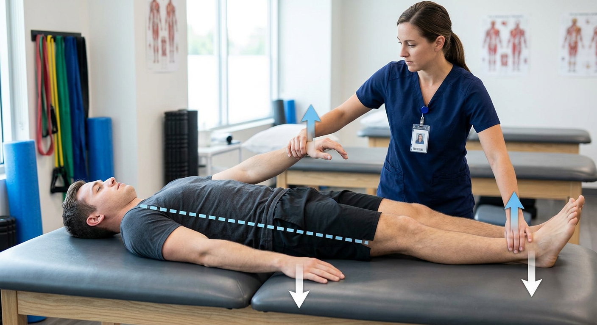
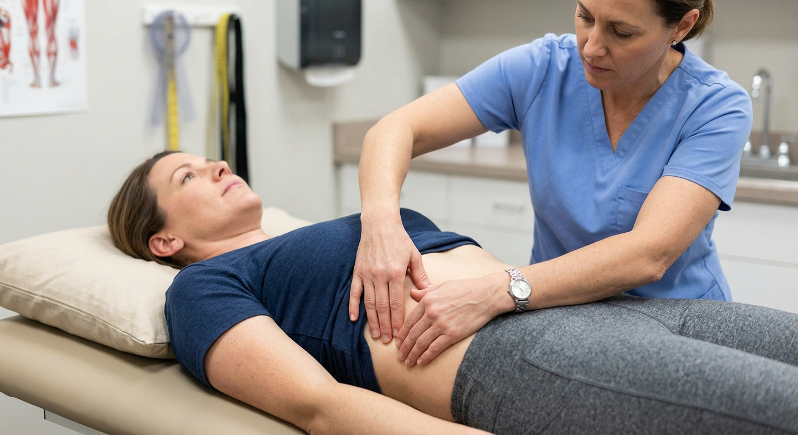
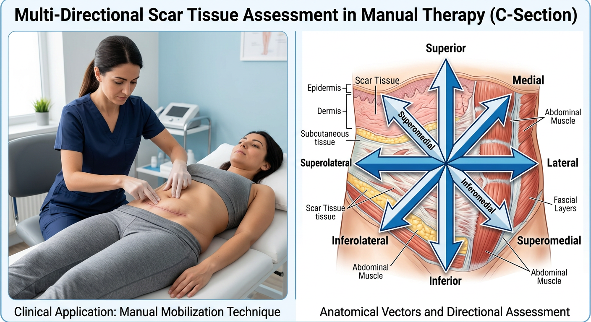
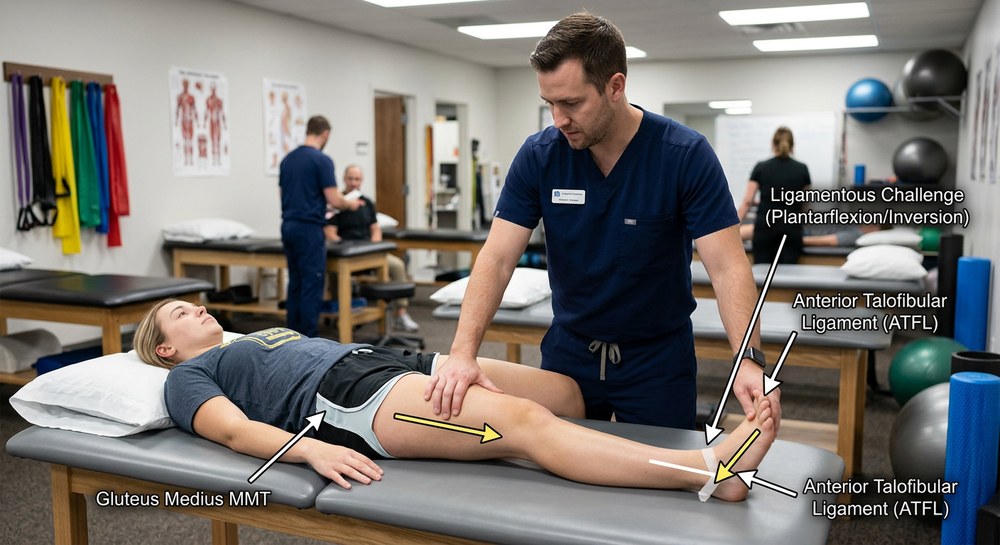
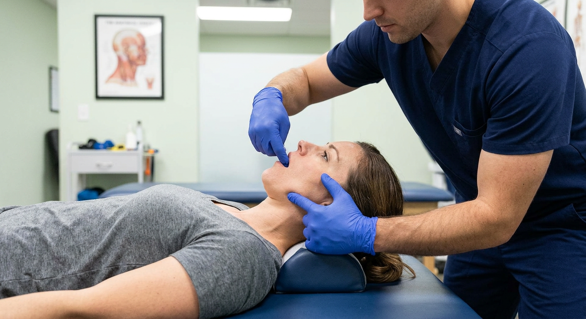

Clinical Focus: Assesses cross-body force transmission between the Latissimus Dorsi, Thoracolumbar Fascia, and Contralateral Gluteus Maximus during terminal stance push-off in gait.
Client & Therapist Setup
- Patient Position: Supine. Right arm extended along flank; Left leg extended in neutral alignment.
- Therapist Placement: Standing on the patient's right side, placing one hand on the right distal forearm and one hand under the left distal achilles tendon.
- Patient Cue: "Press your right hand and left heel down into the table. Lock your position; don't let me lift either limb."
Biomechanical Vectors & Error Detection
- Test Vector: Dual simultaneous upward lifting forces applied over a 2-second isometric ramp.
- Failure Indication: Spongy collapse in either the upper quadrant (Lat) or lower quadrant (Glute Max).
- Synergistic Cheat: Patient arches lumbar spine or side-bends trunk to recruit Quadratus Lumborum.

Clinical Focus: Identifies chronic inhalation/exhalation diaphragmatic facilitation that causes global neurological downregulation of the transverse abdominis, pelvic floor, and deep neck flexors.
Diagnostic Test Protocol
- Baseline Test: Verify a strong indicator muscle (e.g., Psoas or Anterior Deltoid).
- Inhalation Challenge: Patient takes full inhalation and holds → Retest indicator. (Break = Inhalation facilitation).
- Exhalation Challenge: Patient exhales completely and holds → Retest indicator. (Break = Exhalation facilitation).
Hands-On Subcostal Release Technique
- Hand Placement: Curved fingertips placed gently beneath the 7th–10th costal cartilages bilaterally.
- Vector of Mobilization: Cephalad and posterior glide along the inner dome of the ribcage during slow exhalation.
- Duration: 45–60 seconds of gentle myofascial unwinding (never exceed patient comfort).

Clinical Focus: Evaluates surgical and traumatic scars (C-sections, appendectomies, laparoscopic portals) in 8 distinct directional planes to resolve mechanoreceptive afferent "noise" suppressing core stabilizers.
8-Vector Directional Testing
- Linear Vectors: North (Superior), South (Inferior), East (Right Lateral), West (Left Lateral).
- Rotational Vectors: Clockwise (CW) and Counter-Clockwise (CCW) torsion.
- Depth Vectors: Direct deep perpendicular compression vs. Distraction pinch/skin-rolling.
- Confirmation: The vector that turns the weak core muscle rock solid strong is the corrective vector.
Mobilization & Activation Workflow
- Friction Mobilization: Apply 60s of focused cross-fiber shear strictly along the corrective vector.
- Immediate Retest: Core muscle must now test strong in isolation without touching the scar.
- Prescription: Patient performs 1-minute self-scar friction in the exact vector followed by 5 reps of core drawing-in exercises, twice daily.

Clinical Focus: Resolves distant postural and pelvic instability driven by chronic ankle inversion sprains via the ligamento-muscular reflex arc.
Ligamentous Challenge Technique
- Ligament Stress: Place the ankle in passive plantarflexion and inversion to apply specific tensile load to the Anterior Talofibular Ligament (ATFL).
- Simultaneous MMT: While holding the ligament on tension, test the contralateral Gluteus Medius ($30^\circ$ abduction, slight extension).
- Result: If the Gluteus Medius fails under ligament stress, the ATFL is driving the pelvic dyssynergia.
Corrective Intervention
- Step 1: Release hypertonic compensatory structures (e.g., ipsilateral Peroneus Longus or Sacrotuberous Ligament) for 30s.
- Step 2: Proprioceptively stimulate the lax ATFL with 15s of rapid tapping or vibratory input.
- Step 3: Immediately perform 4 reps of single-leg balance and Gluteus Medius isometric holds.

Clinical Focus: Treats forward head posture, cervicogenic headaches, and suboccipital spasms by clearing compensatory hypertonicity in the medial and lateral pterygoids.
Palpation & Testing Vectors
- Lateral Pterygoid Palpation: Gloved index finger glides along the superior gingival bucco-alveolar margin posterior to the upper molars.
- Challenge: Apply light antero-medial pressure to pterygoid head while patient performs resisted jaw protrusion.
- Immediate Retest: Supine Deep Cervical Flexor test (Chin tuck + 1-inch head lift; resisted extension). Weak flexors will instantly lock strong.
Corrective Action & Integration
- Myofascial Release: 30–45s of gentle intra-oral ischemic release to the pterygoids or extra-oral masseter release.
- Active Activation: 5 reps of supine craniocervical flexion (nodding) with tongue pressed to roof of mouth (palatal stabilization).